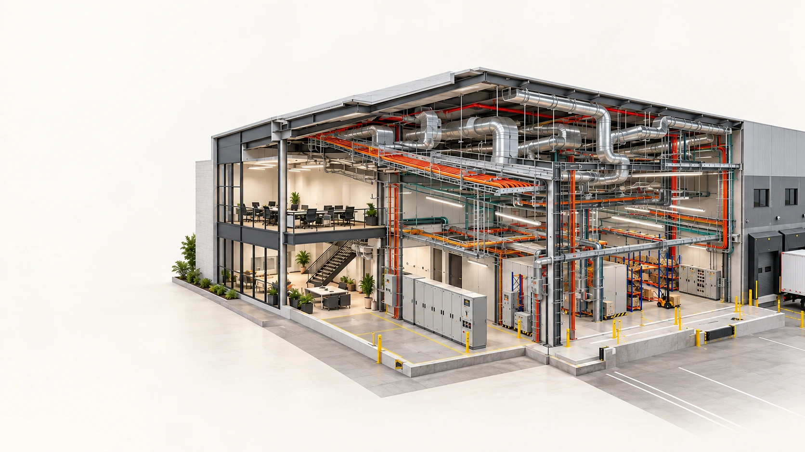
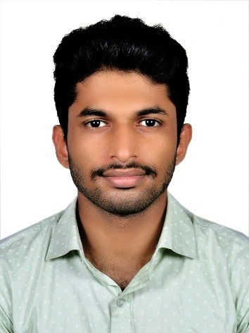

A PORTFOLIO, FROM THE INSIDE
Explore my
work from
the inside.
The systems you don’t see.
The details that make them work.
Electrical, mechanical, plumbing and fire modelling — brought together through Revit.
Models. Drawings.
Details that matter.
Power & lighting↗ 02MEPF families
Modelled with purpose↗ 03Model data
Dynamo for Revit↗
02 / SELECTED WORK
Actual project work & learning studiesBehind every model,
there’s a process.
A closer look at what I modelled, the drawings I produced, and the tools I’m learning to connect them.
03 / CONNECTING THE DISCIPLINES
Electrical · Mechanical · Plumbing · Fire protectionOne building.
Many systems.
Connected thinking.
My modelling skills cover electrical, mechanical, plumbing and fire protection systems, with an emphasis on coordinated Revit MEP workflows.
04 / THE PERSON BEHIND THE MODEL

MOHAMMED RIYAZ VAn engineer’s mindset.
A modeler’s attention.
I’m Mohammed Riyaz V, an Electrical and Electronics Engineering graduate working with Revit MEP and AutoCAD. My skills include electrical, mechanical, plumbing and fire protection modelling. My project work also covers lighting and power layouts, fire alarm modelling, electrical documentation and MEP coordination.
I’m also learning Dynamo through practical Revit exercises: selecting model elements, reading family type parameters and working with model data.
Education
B.Tech · Electrical & Electronics Engineering
NSS College of Engineering, Palakkad2021–2025 · CGPA 7.14
Specialist training
Master Certificate in MEP Design
CADD Centre Training ServicesJune–November 2025
Selected experience
Freelance MEP Designer
UAE warehouse project · September 2025KSEB engineering internship · July 2024
05 / LET’S CONNECT
Have a project
or an opportunity?
↗I’m interested in electrical and MEPF BIM opportunities, particularly roles in the UAE.